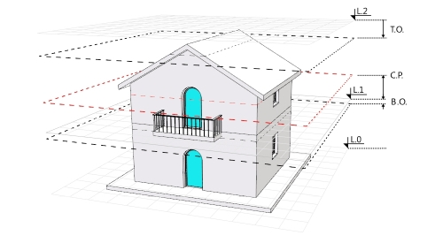

vaLivelli
Icona:
 clic sinistro
clic sinistro
Barra degli strumenti Strumenti:

Menu:
Il comando vaLivelli apre la finestra di dialogo ancorabile del Gestore dei livelli, da cui si possono creare, eliminare e modificare costruzioni e livelli.
Dalla finestra di dialogo del Gestore dei livelli si può esercitare un controllo sul PianoC (piano di costruzione), sulla visibilità e sui valori di Elevazione e Piano di taglio di ciascun livello.
La finestra di dialogo del Gestore dei livelli si suddivide in due parti:

Finestra di dialogo Gestore dei livelli.

Parametri del livello "1":
 |
Crea delle nuove costruzioni da cui si possono aggiungere dei nuovi livelli. Ciascuna costruzione ha il suo proprio valore di elevazione ed i valori di elevazione dei livelli in essa contenuti sono relativi a quella costruzione. |
 |
Aggiunge un nuovo livello alla costruzione selezionata. Il nuovo livello verrà creato automaticamente sopra il livello esistente e, di default, avrà lo stesso valore di elevazione del livello sottostante. È necessario creare un elemento costruzione per creare dei livelli. |
 |
Elimina il livello o la costruzione specificati. Ciò non influisce sugli oggetti di Rhino e VisualARQ contenuti all'interno del livello eliminato o della costruzione eliminata. Essi rimangono nello stesso posto. |
Il Piano di taglio rappresenta un piano di sezione orizzontale presente in ogni livello e situato ad un'altezza specifica dall'elevazione di ciascun livello. Il pulsante del piano di taglio attiva o disattiva il Piano di taglio del livello selezionato, nella vista attiva. Per attivare lo stato del Piano di taglio occorre creare una costruzione ed un livello.
Quando il piano di taglio viene attivato per un determinato livello nella vista attiva, tutto ciò che si trova al di sopra del piano di taglio di quel livello NON sarà visibile.
Quando il piano di taglio viene attivato nelle viste Superiori, gli oggetti di VisualARQ (porte, finestre, scale, ecc.) vengono mostrati in modalità di rappresentazione grafica 2D.
 |
Piano di taglio attivo: la vista mostra il livello in sezione secondo la posizione del suo piano di taglio. |
 |
Piano di taglio disattivato: la vista mostra tutto il livello (secondo il suo stato di visibilità On/Off). |
 |
Piano di taglio disabilitato: occorre selezionare un livello per abilitare lo stato del relativo piano di taglio. |

Vista del livello 0 e del livello 1 con il piano di taglio sul livello 1 attivo.

Vista del livello 0 e del livello 1 con il piano di taglio sul livello 1 disattivato. (Visualizzazione del livello 2 disattivata)

Vista del solo livello 1 con il piano di taglio disattivato. (Visualizzazione dei livelli 0 e 2 disattivata)
 |
Il PianoC (piano di costruzione) determina l'elevazione del piano da cui si sta lavorando. Cliccare sull'icona del piano di costruzione di un livello qualsiasi per spostare il piano di costruzione sull'elevazione di quel livello nella vista attiva. |
Lo stato di visibilità On/Off di un livello mostra o nasconde gli oggetti (o parti di essi) situati tra l'elevazione del livello corrente e l'elevazione del livello superiore (tenendo conto dei valori di offset superiore ed inferiore).
 |
Il livello è visibile ed è possibile visualizzarne gli oggetti o parti di essi. |
 |
Il livello non è visibile e non è possibile visualizzarne gli oggetti o parti di essi. |
Nota: i livelli intermedi non si possono nascondere singolarmente. Quando si nasconde un livello intermedio, vengono nascosti automaticamente anche i livelli ad esso sottostanti.
La vista in pianta mostra la rappresentazione 2D di qualsiasi livello, nel piano di costruzione della vista attiva. Questa rappresentazione 2D non si può modificare e mostra solo gli oggetti in sezione che si trovano nel livello selezionato, secondo la posizione del piano di taglio in quel livello.
 |
La rappresentazione 2D del livello selezionato è visibile nel piano di costruzione della vista attiva. |
 |
La rappresentazione 2D del livello selezionato non è visibile nel piano di costruzione della vista attiva. |
Per impostare un livello specifico come piano corrente nella vista attiva, fare doppio clic sul nome del livello. Ciò sistemerà automaticamente il PianoC sul livello selezionato ed attiverà questo livello nel caso esso fosse nascosto.
Il valore di elevazione indica l'altezza base di ciascuna costruzione o ciascun livello e la posizione di un piano di costruzione rispetto a ciascuna costruzione o ciascun livello. Determina quale parte del modello corrisponde a ciascun livello. I valori di elevazione sui livelli sono relativi all'altezza di elevazione della costruzione. Il valore di elevazione della costruzione viene misurato lungo l'asse z del documento.

Il contrassegno di elevazione del livello corrente appare evidenziato.
Il piano di taglio determina l'elevazione in corrispondenza della quale si realizza la sezione orizzontale di ciascun piano; ciò significa che vengono rappresentati solo gli oggetti che si trovano in corrispondenza di tale elevazione o al di sotto di essa.
NOTA: Quando una finestra viene impostata sulla modalità vista in pianta di VisualARQ, la modalità di visualizzazione passa ad essere "nascosta" e cambia la finestra della vista Superiore . Finché la modalità di visualizzazione in pianta è attivata, la finestra mostrerà qualsiasi modalità di visualizzazione selezionata, anche se si cambia di livello.
L'offset superiore determina il valore secondo cui il limite superiore di un livello viene aumentato o diminuito quando si nascondono interi livelli. Ciò è particolarmente utile quando si nasconde la parte superiore di un edificio e si desidera nascondere anche il solaio superiore dell'ultimo livello visualizzato. Questo valore è irrilevante per il livello superiore di un edificio ed ha effetto solo sulle viste con il piano di taglio disattivato.
L'offset inferiore determina il valore secondo cui il limite inferiore di un livello viene aumentato o diminuito quando si nascondono interi livelli. Ciò è particolarmente utile quando si nasconde la parte inferiore di un edificio e si desidera nascondere anche il solaio inferiore dell'ultimo livello visualizzato. Questo valore è irrilevante per il livello inferiore di un edificio ed ha effetto solo sulle viste con il piano di taglio disattivato.